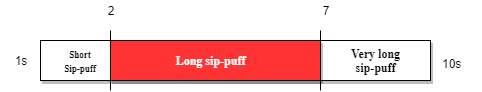

Lipsync User Menu
Uploading, do not use the LipSync!!!
Cursor
Choose your cursor speed
Slow
Fast
Pressure Sensors
Choose your sip sensitivity
Low
High
Choose your puff sensitivity
Low
High
Choose your sip-puff duration

1s
10s
Reverse Sip and Puff
Flash
Reset
Keep these settings?
Revert
Keep changes